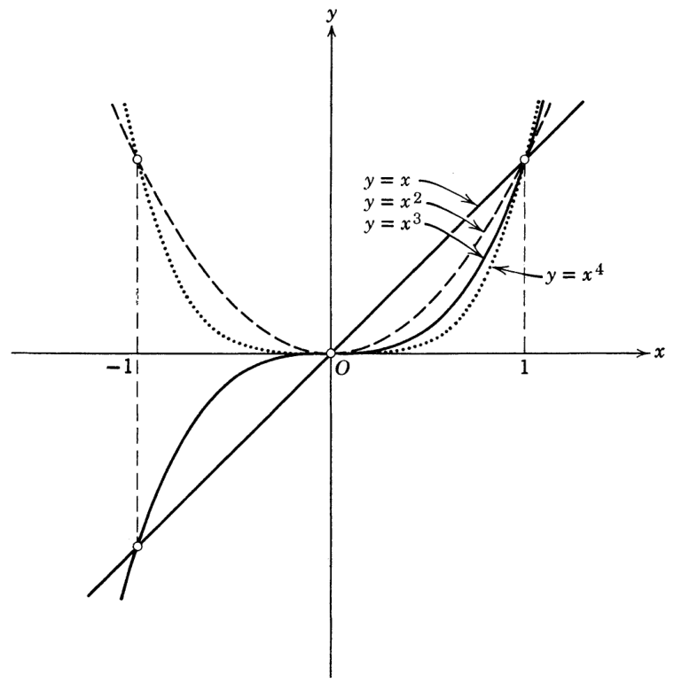
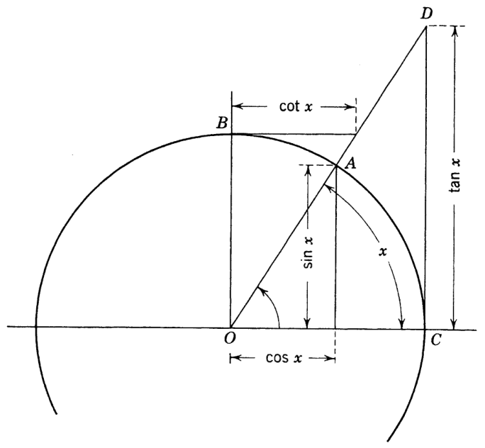
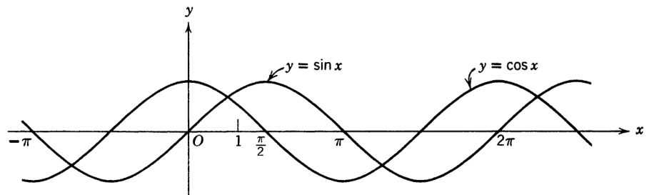
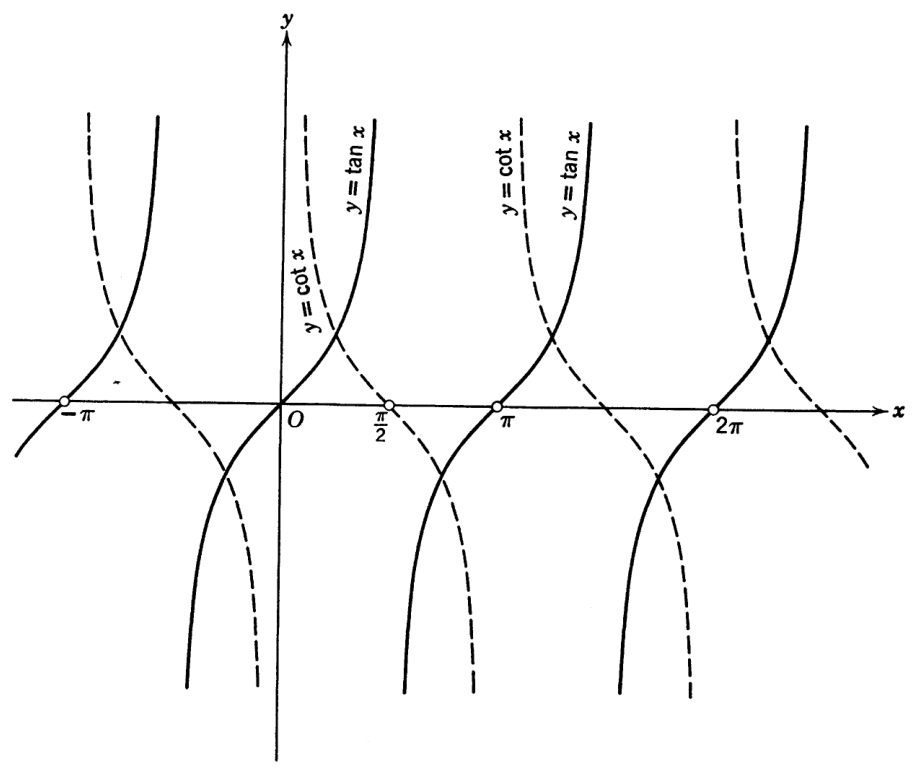
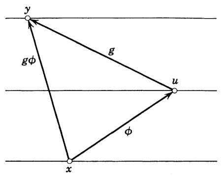
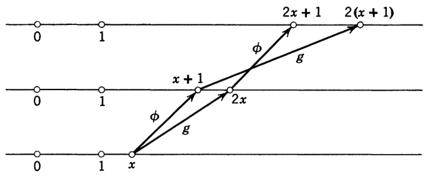

a. 有理函数
我们来简要回顾一下熟悉的初等函数。最简单的一类函数，是反复施行加法和乘法这两种初等运算得到的。对一个自变量 x x x 多项式
y = a 0 + a 1 x + ⋯ + a n x n .
y=a_0+a_1x+\cdots+a_nx^n.
y = a 0 + a 1 x + ⋯ + a n x n . 多项式是分析中最简单的函数，在某种意义上也是最基本的函数。两个多项式的商
y = a 0 + a 1 x + ⋯ + a n x n b 0 + b 1 x + ⋯ + b m x m
y=\frac{a_0+a_1x+\cdots+a_nx^n}{b_0+b_1x+\cdots+b_mx^m}
y = b 0 + b 1 x + ⋯ + b m x m a 0 + a 1 x + ⋯ + a n x n 给出一般的有理函数 。凡分母不为零的点，函数都有定义。
最简单的一次多项式，即线性函数 y = a x + b y=ax+b y = a x + b y = a x 2 + b x + c y=ax^2+bx+c y = a x 2 + b x + c y = a x 3 + b x 2 + c x + d y=ax^3+bx^2+cx+d y = a x 3 + b x 2 + c x + d

图 1.35 的幂 图 1.35 画出了指数 n = 1 , 2 , 3 , 4 n=1,2,3,4 n = 1 , 2 , 3 , 4 y = x n y=x^n y = x n n n n f ( − x ) = f ( x ) f(-x)=f(x) f ( − x ) = f ( x ) n n n f ( − x ) = − f ( x ) f(-x)=-f(x) f ( − x ) = − f ( x )
在多项式以外的有理函数中，最简单的例子就是第 27 页提到的 y = 1 / x y=1/x y = 1/ x y = 1 / x 2 y=1/x^2 y = 1/ x 2
b. 代数函数
只要提出求有理函数的反函数这个问题，我们就会立即走出有理函数的范围。典型的例子是 x n x^n x n x n \sqrt[n]{x} n x y = x n y=x^n y = x n x ≥ 0 x\ge0 x ≥ 0 x = y n x=\sqrt[n]{y} x = n y
y = x n = x 1 / n .
y=\sqrt[n]{x}=x^{1/n}.
y = n x = x 1/ n . 按定义，这个根总是非负的。当 n n n x n x^n x n x x x x x x n n n x n \sqrt[n]{x} n x x x x x x x x n \sqrt[n]{x} n x
更一般地，可以考察 y = R ( x ) n y=\sqrt[n]{R(x)} y = n R ( x ) R ( x ) R(x) R ( x )
y = x m + x 2 + 1 n , y = x + x 2 + 1 .
y=\sqrt[m]{x}+\sqrt[n]{x^2+1},\qquad y=x+\sqrt{x^2+1}.
y = m x + n x 2 + 1 , y = x + x 2 + 1 . 这些都是代数函数 的特殊情形。（代数函数的一般概念将在第二卷定义。）
c. 三角函数
有理函数和代数函数直接来自初等的计算运算。另一类函数，即所谓超越函数 ，我们最初却是从几何中认识的。¹ 这里要考察其中的初等超越函数 ，即三角函数、指数函数和对数函数。
原注 1（第 49 页） “超越”一词没有什么特别深奥或神秘的意思。它只表示这类函数的定义超出了初等计算运算的范围，亦即 quod algebrae vires transcendit （超出代数之所能）。

图 1.36 三角函数 在分析中，角的大小用弧度 来量。把待量的角的顶点放在半径为 1 1 1 180 ∘ 180^\circ 18 0 ∘ π \pi π π \pi π 90 ∘ 90^\circ 9 0 ∘ 45 ∘ 45^\circ 4 5 ∘ 360 ∘ 360^\circ 36 0 ∘ π / 2 \pi/2 π /2 π / 4 \pi/4 π /4 2 π 2\pi 2 π 1 1 1 180 ∘ / π 180^\circ/\pi 18 0 ∘ / π 57 ∘ 17 ′ 45 ′ ′ 57^\circ17'45'' 5 7 ∘ 1 7 ′ 4 5 ′′ x x x x x x
原注 1（第 50 页） 一个角的弧度数，也可以定义为单位圆内相应扇形面积的两倍。

图 1.37 我们略为回顾三角函数 sin x , cos x , tan x , cot x \sin x,\cos x,\tan x,\cot x sin x , cos x , tan x , cot x O C OC OC 1 1 1 x x x cos x \cos x cos x sin x \sin x sin x A A A sin x , cos x , tan x , cot x \sin x,\cos x,\tan x,\cot x sin x , cos x , tan x , cot x
原注 1（第 51 页） 有时引入函数 sec x = 1 / cos x \sec x=1/\cos x sec x = 1/ cos x cosec x = 1 / sin x \operatorname{cosec}x=1/\sin x cosec x = 1/ sin x

图 1.38 d. 指数函数与对数
除了三角函数，初等超越函数还包括以正数 a a a y = a x y=a^x y = a x a a a x = log a y x=\log_a y x = log a y
若 x = p / q x=p/q x = p / q p , q p,q p , q a a a a x a^x a x a p q = a p / q \sqrt[q]{a^p}=a^{p/q} q a p = a p / q x x x a x a^x a x x x x a x a^x a x y = a x y=a^x y = a x 指数函数 。对一切有理数 x x x
原注 1（第 52 页） 证明见第 152 页。
于是，在 y > 0 y>0 y > 0 x = log a y x=\log_a y x = log a y x = log a y x=\log_a y x = log a y y = a x y=a^x y = a x
译者注 这里取对数还须有 a ≠ 1 a\ne1 a = 1 a = 1 a=1 a = 1 a x a^x a x 1 1 1 x x x a 0 = 1 a^0=1 a 0 = 1 a − x = 1 / a x a^{-x}=1/a^x a − x = 1/ a x
e. 复合函数、符号乘积与反函数
要从已知函数造出新函数，除了施行有理运算，还有一种更普遍、更基本的方法，就是取“函数的函数”，即构造复合函数 。
设 u = ϕ ( x ) u=\phi(x) u = ϕ ( x ) a ≤ x ≤ b a\le x\le b a ≤ x ≤ b α ≤ u ≤ β \alpha\le u\le\beta α ≤ u ≤ β y = g ( u ) y=g(u) y = g ( u ) α ≤ u ≤ β \alpha\le u\le\beta α ≤ u ≤ β g ( ϕ ( x ) ) = f ( x ) g(\phi(x))=f(x) g ( ϕ ( x )) = f ( x ) a ≤ x ≤ b a\le x\le b a ≤ x ≤ b f f f g g g ϕ \phi ϕ 复合 而成。例如，f ( x ) = 1 / ( 1 + x 2 n ) f(x)=1/(1+x^{2n}) f ( x ) = 1/ ( 1 + x 2 n ) ϕ ( x ) = 1 + x 2 n \phi(x)=1+x^{2n} ϕ ( x ) = 1 + x 2 n g ( u ) = 1 / u g(u)=1/u g ( u ) = 1/ u f ( x ) = sin ( 1 / x ) f(x)=\sin(1/x) f ( x ) = sin ( 1/ x ) ϕ ( x ) = 1 / x \phi(x)=1/x ϕ ( x ) = 1/ x g ( u ) = sin u g(u)=\sin u g ( u ) = sin u
从映射的角度看复合函数很有帮助。映射 ϕ \phi ϕ [ a , b ] [a,b] [ a , b ] x x x [ α , β ] [\alpha,\beta] [ α , β ] u u u g g g [ α , β ] [\alpha,\beta] [ α , β ] u u u y y y f f f g g g ϕ \phi ϕ 符号乘积 ” g ϕ g\phi g ϕ ϕ \phi ϕ g g g [ a , b ] [a,b] [ a , b ] x x x ϕ \phi ϕ u u u u = ϕ ( x ) u=\phi(x) u = ϕ ( x ) g g g g ( ϕ ( x ) ) = f ( x ) = y g(\phi(x))=f(x)=y g ( ϕ ( x )) = f ( x ) = y g ϕ g\phi g ϕ ϕ \phi ϕ g g g g ϕ = g ( ϕ ) g\phi=g(\phi) g ϕ = g ( ϕ ) g ( x ) ⋅ ϕ ( x ) g(x)\cdot\phi(x) g ( x ) ⋅ ϕ ( x ) g ( x ) g(x) g ( x ) ϕ ( x ) \phi(x) ϕ ( x ) x x x
原注 1（第 53 页） 乘积 g ϕ g\phi g ϕ ϕ \phi ϕ g g g f ( x ) f(x) f ( x ) x x x f f f sin ( log x ) \sin(\log x) sin ( log x ) x x x

图 1.39 两个映射的符号乘积 自然，不能期待符号乘积可以交换。一般说来，即使 g ( ϕ ) g(\phi) g ( ϕ ) ϕ ( g ) \phi(g) ϕ ( g ) ϕ \phi ϕ 1 1 1 g g g 2 2 2
g ( ϕ ( x ) ) = 2 ( x + 1 ) = 2 x + 2 , ϕ ( g ( x ) ) = ( 2 x ) + 1 = 2 x + 1.
g(\phi(x))=2(x+1)=2x+2,\qquad
\phi(g(x))=(2x)+1=2x+1.
g ( ϕ ( x )) = 2 ( x + 1 ) = 2 x + 2 , ϕ ( g ( x )) = ( 2 x ) + 1 = 2 x + 1. 要使两个映射的符号乘积 g ϕ g\phi g ϕ g g g ϕ \phi ϕ g g g ϕ \phi ϕ g ( u ) = u g(u)=\sqrt u g ( u ) = u ϕ ( x ) = − 1 − x 2 \phi(x)=-1-x^2 ϕ ( x ) = − 1 − x 2 g ϕ g\phi g ϕ
也有必要考察多次复合而成的函数。譬如 f ( x ) = 1 + tan ( x 2 ) f(x)=\sqrt{1+\tan(x^2)} f ( x ) = 1 + tan ( x 2 )
ϕ ( x ) = x 2 , ψ ( ϕ ) = 1 + tan ϕ , g ( ψ ) = ψ = f ( x ) .
\phi(x)=x^2,\qquad \psi(\phi)=1+\tan\phi,\qquad
g(\psi)=\sqrt\psi=f(x).
ϕ ( x ) = x 2 , ψ ( ϕ ) = 1 + tan ϕ , g ( ψ ) = ψ = f ( x ) . 用符号写，就是 f = g ψ ϕ f=g\psi\phi f = g ψ ϕ

图 1.40 映射的复合不能随意交换次序 反函数
从映射的乘积来看，“反函数”的概念更为清楚。设映射 ϕ \phi ϕ x x x u = ϕ ( x ) u=\phi(x) u = ϕ ( x ) x x x u u u 一一的 ”。这样，一个值 u u u x x x ϕ \phi ϕ u u u x = g ( u ) x=g(u) x = g ( u ) u u u x x x ϕ \phi ϕ g g g ϕ \phi ϕ g g g u = ϕ ( x ) u=\phi(x) u = ϕ ( x ) x x x g ( ϕ ( x ) ) = x g(\phi(x))=x g ( ϕ ( x )) = x g g g ϕ \phi ϕ 逆映射 。它的特征可以用符号等式 g ϕ x = x g\phi x=x g ϕ x = x
恒等映射
把每个 x x x 恒等映射 I I I g g g ϕ \phi ϕ g ϕ = I g\phi=I g ϕ = I I I I 1 1 1 I I I g ϕ = I g\phi=I g ϕ = I ϕ \phi ϕ g = ϕ − 1 g=\phi^{-1} g = ϕ − 1 u = sin x u=\sin x u = sin x x = arcsin u x=\arcsin u x = arcsin u x = sin − 1 u x=\sin^{-1}u x = sin − 1 u
原注 1（第 54 页） 确切地说，g ϕ g\phi g ϕ ϕ \phi ϕ I I I
原注 2（第 54 页） 这里的记号须与代数倒数 1 / ( sin u ) 1/(\sin u) 1/ ( sin u )
由反函数的定义立即可知，若 g g g ϕ \phi ϕ ϕ \phi ϕ g g g g ( ϕ ) = x g(\phi)=x g ( ϕ ) = x ϕ ( g ( u ) ) = u \phi(g(u))=u ϕ ( g ( u )) = u
译者注 前一式里的 ϕ \phi ϕ ϕ ( x ) \phi(x) ϕ ( x ) x x x u u u [ − π / 2 , π / 2 ] [-\pi/2,\pi/2] [ − π /2 , π /2 ]
* 定义在区间 a ≤ x ≤ b a\le x\le b a ≤ x ≤ b u = ϕ ( x ) u=\phi(x) u = ϕ ( x ) ϕ \phi ϕ ϕ ( a ) \phi(a) ϕ ( a ) ϕ ( b ) \phi(b) ϕ ( b ) ϕ \phi ϕ g g g
事实上，设 u = ϕ ( x ) u=\phi(x) u = ϕ ( x ) [ a , b ] [a,b] [ a , b ] x x x u u u ϕ ( a ) = α \phi(a)=\alpha ϕ ( a ) = α ϕ ( b ) = β \phi(b)=\beta ϕ ( b ) = β α < β \alpha<\beta α < β ϕ ( x ) \phi(x) ϕ ( x ) a ≤ c < d ≤ b a\le c<d\le b a ≤ c < d ≤ b c , d c,d c , d ϕ ( d ) < ϕ ( c ) \phi(d)<\phi(c) ϕ ( d ) < ϕ ( c ) ϕ ( d ) ≥ ϕ ( a ) \phi(d)\ge\phi(a) ϕ ( d ) ≥ ϕ ( a ) [ a , c ] [a,c] [ a , c ] ξ \xi ξ ϕ ( ξ ) = ϕ ( d ) \phi(\xi)=\phi(d) ϕ ( ξ ) = ϕ ( d ) ξ \xi ξ d d d ϕ ( d ) < ϕ ( a ) = α \phi(d)<\phi(a)=\alpha ϕ ( d ) < ϕ ( a ) = α ϕ ( a ) \phi(a) ϕ ( a ) ϕ ( d ) \phi(d) ϕ ( d ) ϕ ( b ) \phi(b) ϕ ( b ) d d d b b b ξ \xi ξ ϕ ( ξ ) = ϕ ( a ) \phi(\xi)=\phi(a) ϕ ( ξ ) = ϕ ( a ) ϕ \phi ϕ
译者注 本段沿用前文的术语，“单调”指严格单调，函数不能在一段区间上保持常值。证明的要点是，若曲线从左端到右端总的看来上升，中途却有一次下降，某一条水平线就会与它相交两次。
复合函数有一个重要而几乎显而易见的性质：若 g g g ϕ \phi ϕ g ( ϕ ( x ) ) = f ( x ) g(\phi(x))=f(x) g ( ϕ ( x )) = f ( x ) ϵ \epsilon ϵ g g g ∣ ϕ ( x ) − ϕ ( x 0 ) ∣ < δ |\phi(x)-\phi(x_0)|<\delta ∣ ϕ ( x ) − ϕ ( x 0 ) ∣ < δ δ \delta δ
∣ f ( x ) − f ( x 0 ) ∣ = ∣ g ( ϕ ( x ) ) − g ( ϕ ( x 0 ) ) ∣ < ϵ .
|f(x)-f(x_0)|=|g(\phi(x))-g(\phi(x_0))|<\epsilon.
∣ f ( x ) − f ( x 0 ) ∣ = ∣ g ( ϕ ( x )) − g ( ϕ ( x 0 )) ∣ < ϵ . 又因 ϕ \phi ϕ δ ′ \delta' δ ′ ∣ x − x 0 ∣ < δ ′ |x-x_0|<\delta' ∣ x − x 0 ∣ < δ ′ x x x ∣ ϕ ( x ) − ϕ ( x 0 ) ∣ < δ |\phi(x)-\phi(x_0)|<\delta ∣ ϕ ( x ) − ϕ ( x 0 ) ∣ < δ
∣ x − x 0 ∣ < δ ′ ⟹ ∣ f ( x ) − f ( x 0 ) ∣ < ϵ ,
|x-x_0|<\delta'\quad\Longrightarrow\quad |f(x)-f(x_0)|<\epsilon,
∣ x − x 0 ∣ < δ ′ ⟹ ∣ f ( x ) − f ( x 0 ) ∣ < ϵ , 这就证明了 f f f
要证明诸如 1 − x 2 \sqrt{1-x^2} 1 − x 2